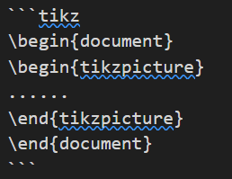
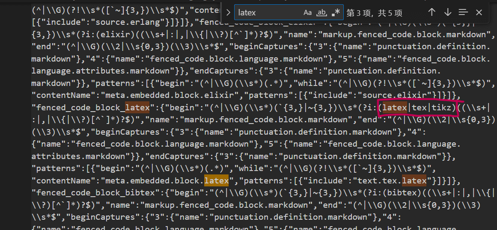
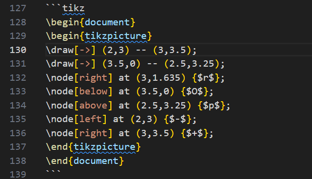

解决vscode无法对markdown源码中新定义语言(tikz)高亮的问题
一次vscode编辑器代码高亮编辑
- 发布
- 阅读
- 01 分钟
- 语言
- ZH
- 分类
- 配置问题
解决vscode无法对markdown源码中新定义语言(tikz)高亮的问题
问题原因
刚刚配置了可用在hexo用于画图的tikz插件（hexo-filter-tikzjax），链接如下：使用 TikZ 在 Hexo 博客中愉快地画图
其中插入的代码要这样写
```tikz
\begin{document}
\begin{tikzpicture}
......
\end{tikzpicture}
\end{document}
```但这样的话，vscode就无法将其识别为latex语言而不进行高亮，如下图

所以必须要修改vscode配置文件
解决方法
vscode编辑器的语法高亮储存在 .tmLanguage.json 文件中，可以在电脑中搜索 markdown.tmLanguage.json ，我们只需要在latex高亮的提示词前面加上tikz即可。

重启vscode，就可以看到了高亮的代码了。成果图如下
